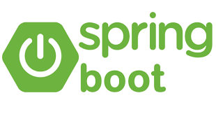
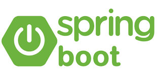

bonjour,je suis renaud kabore

J'adore Github, le design UX/UI, le développement web et les motos. J'ai lancé Le Wagon pour enseigner le code aux entrepreneurs et aux personnes créatives du monde entier. En tant que passionné de technologie, de design et de sensations fortes sur la route, je trouve du plaisir dans les deux mondes, numérique et physique.
liste de competance

 


UX/UI Desing
Je suis passionné par le design UX/UI. J'aime créer des expériences utilisateur qui sont à la fois intuitives, engageantes et esthétiquement agréables. Trouver des solutions innovantes pour résoudre les défis de conception et améliorer la satisfaction des utilisateurs est ce qui me motive chaque jour.
Frontend Development
e suis passionné par le développement Frontend. J'adore donner vie aux conceptions et créer des expériences interactives auxquelles les utilisateurs aiment s'engager. De la création d'interfaces utilisateur esthétiques à l'optimisation des performances et de la réactivité, j'apprécie chaque aspect de la construction d'applications web qui non seulement ont fière allure mais offrent également une expérience utilisateur fluide.
motorbikes
i am passionate about Motorbikes.